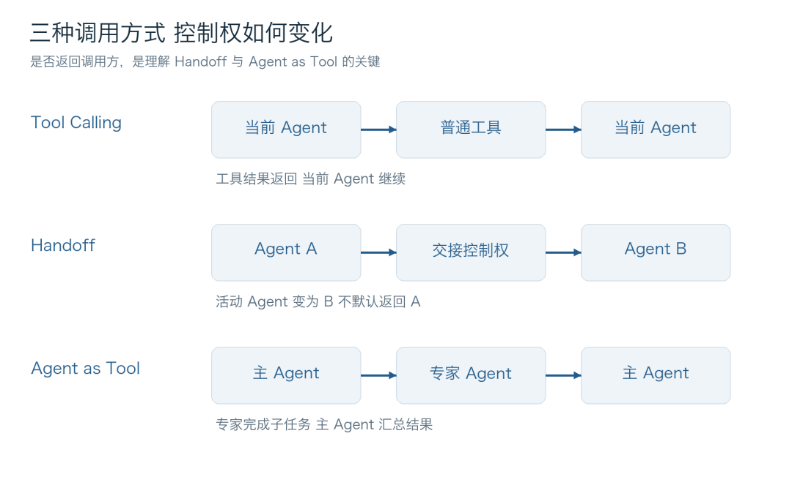
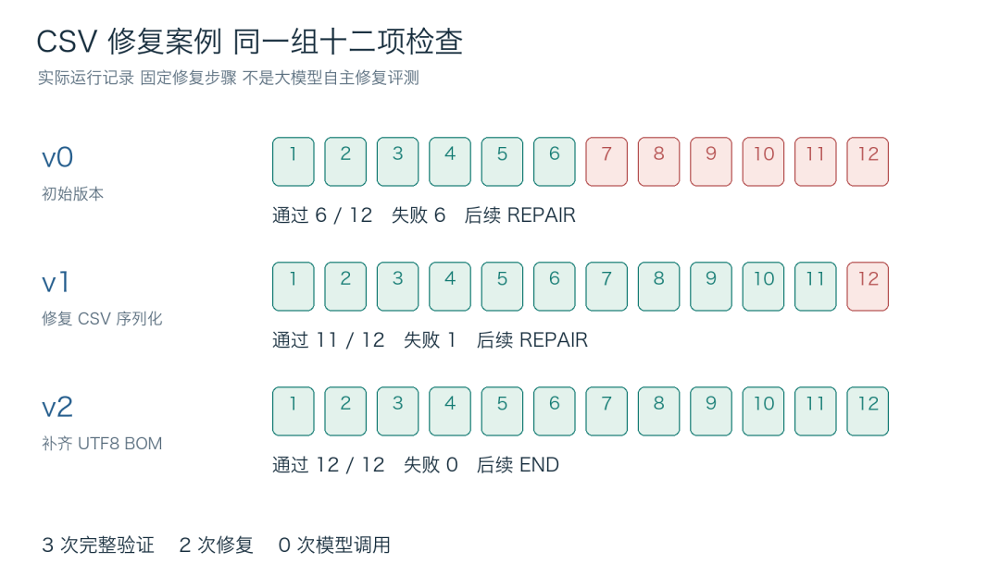
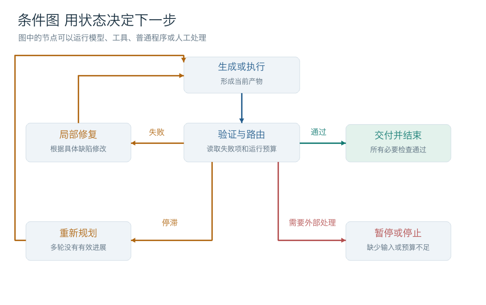
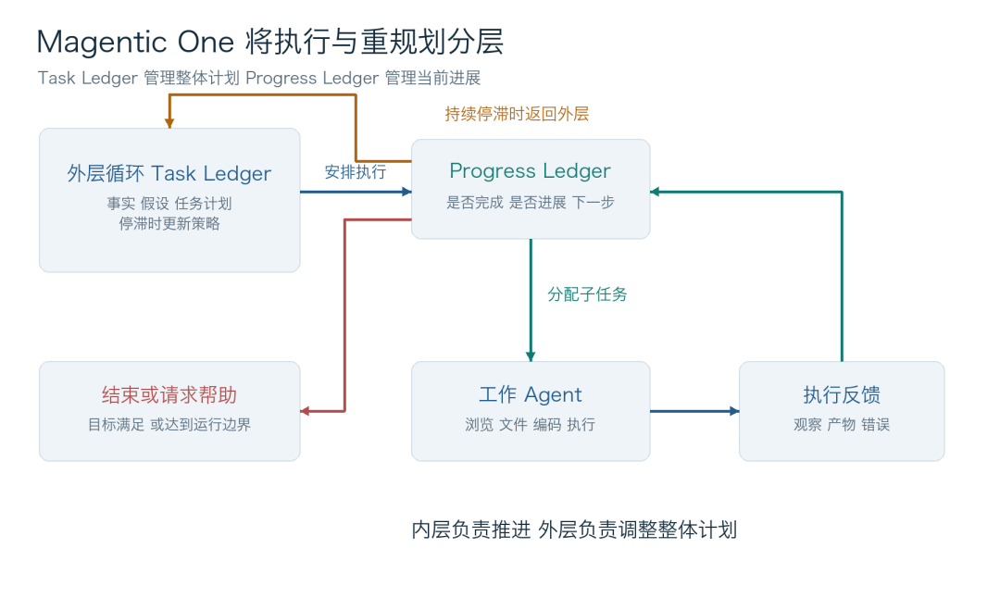
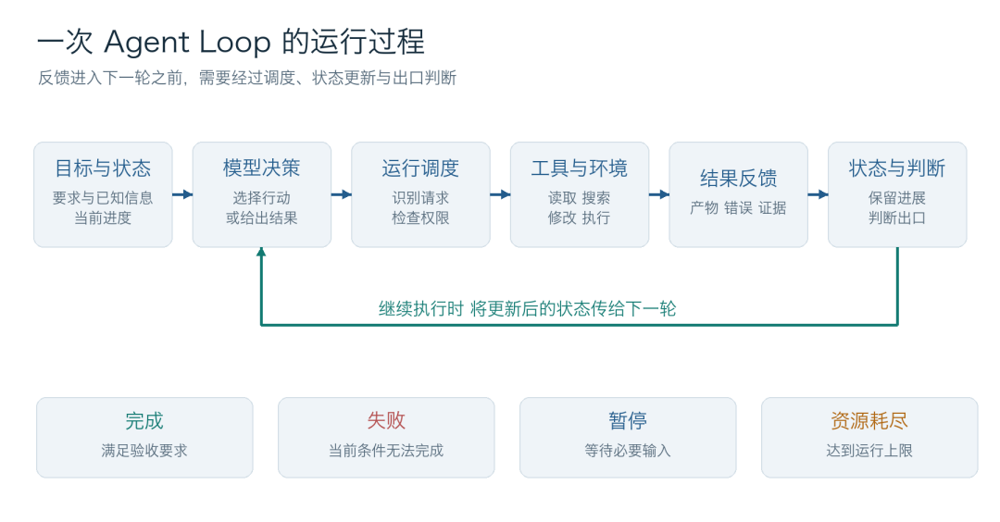
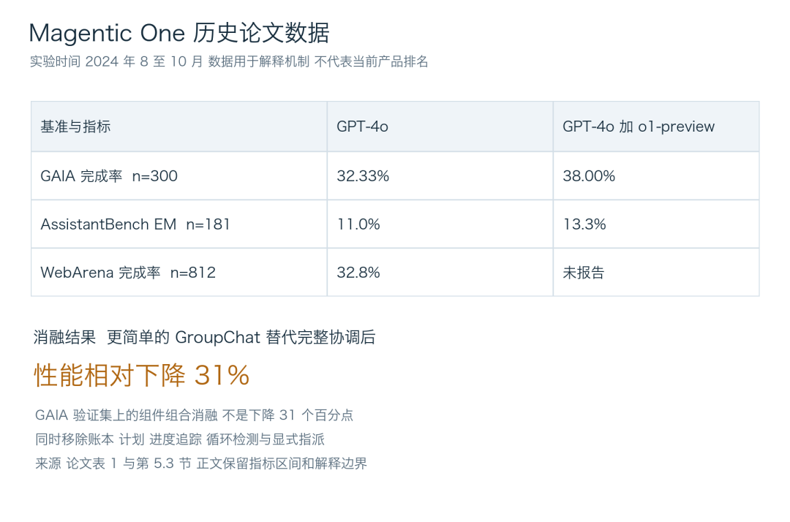

OpenAI Agents SDK
Runner 连接工具结果与 Handoff；Agent-as-Tool 支持调用后返回主 Agent。
Runner 文档 ↗让模型连续完成任务的关键，不只是“再问一次”。运行系统要把行动送到正确环境、把结果写回状态，并根据验收、停滞和预算选择下一步。
用同一张时序图比较通用运行回路、Tool Calling、Handoff 与 Agent as Tool。切换场景，观察执行结果回到哪里、谁保留控制权。
明确验收条件全部满足，并保留可复核证据。
当前条件无法完成，说明原因与已尝试路径。
等待必要输入、权限或人工批准后恢复。
达到轮次、时间或预算边界，报告当前进度。

验证结果连接两组时序图：执行层把结果交给路由判断；这里再展开局部修复、条件分支和计划级重规划。

v0 朴素拼接导致转义、空值与 BOM 相关失败；v1 改用标准库 csv.writer 与 CRLF 后，通过 11 项；v2 补上 UTF-8 BOM，通过全部 12 项。
证据边界：这是固定修复步骤的程序化复现，真实执行了导出与验证，模型调用数为 0。它展示反馈闭环，不衡量大模型自主修复能力。



模式说明任务怎样组织；机制说明下一轮由什么控制信号触发。它们可以组合，不应该混成一个互斥分类。
横轴选择任务怎么组织；纵轴选择下一轮由什么机制触发。点击轴标签查看定义；窄屏可横向滑动。
| 纵轴 ↓执行机制下一轮由什么信号触发横轴 → 任务组织模式 | |||||
|---|---|---|---|---|---|
机制说明与效果证据分开呈现。论文分数是特定模型、任务集和时间下的历史结果，不构成当前产品排名。

这里引用的是可查的 SDK、框架或公开源码，不能据此推断同一厂商所有产品的内部结构。
Runner 连接工具结果与 Handoff；Agent-as-Tool 支持调用后返回主 Agent。
Runner 文档 ↗按 stop_reason 区分执行工具、继续请求与停止分支。
公开源码 ↗包含固定迭代、图式与动态工作流等不同表达方式。
LoopAgent ↗AutoGen 展示 Swarm、SelectorGroupChat 与 Magentic-One；Agent Framework 继续提供工作流 API。
Swarm 文档 ↗FnCallAgent 源码展示显式循环、工具检测、执行与结果回写。
公开源码 ↗用状态、节点、条件边、检查点和中断恢复表达控制路径。
Graph API ↗